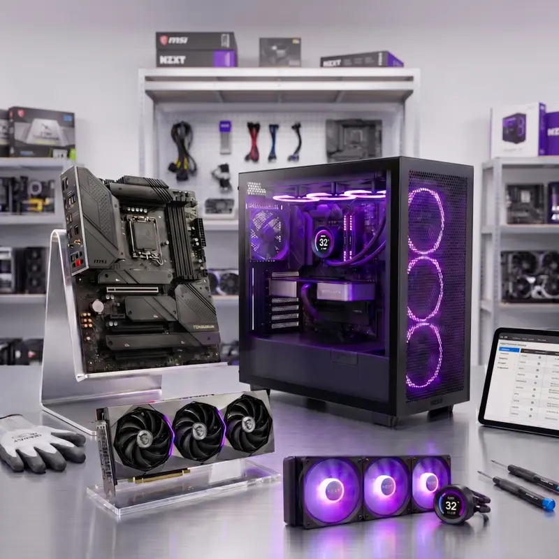
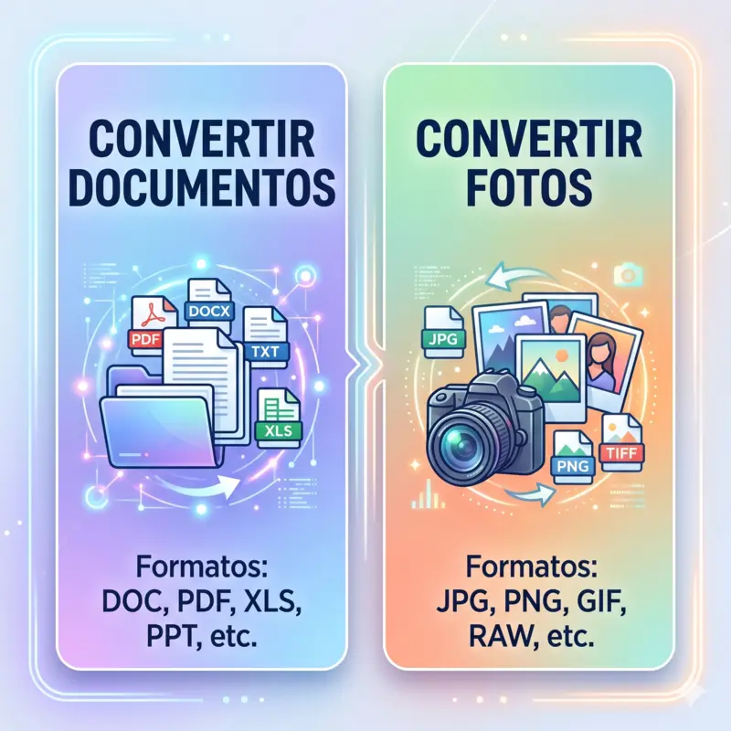

Servicio técnico
Mantenimiento y mejoras de hardware para PC Gaming en L'Hospitalet de Llobregat.

Mantenimiento PC Gaming
Limpieza interna, pasta térmica y revisión de la refrigeración.
Más información
Actualización de PC Gaming
Amplía la RAM, instala un SSD o cambia la gráfica.
Más informaciónOtros servicios

Actualización de BIOS
Comprobación del firmware y de la compatibilidad de tu placa base.
Más informaciónAsistencia remota
Ayuda a distancia para incidencias de software.
Más información
Asesoramiento de compra
Elige componentes compatibles con tu presupuesto.
Más información
Servicio de montaje
Montaje y pruebas de los componentes de tu PC.
Más información
Conversión de documentos
Ayuda con archivos que necesitas abrir o cambiar de formato.
Más información